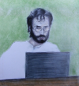

I am a research fellow at that Laboratory for Foundations of Computer Science at the University Edinburgh School of Informatics.
September 2014
- I am currently tutoring the Computation and Logic course.
- I will be assisting with the delivery of a Whole Cell Modelling course in Paris in January.
Research Interests
- Databases and provenance
- Network engineering
- Numerical methods and dynamical systems
- Censorship, privacy and anonymity
Current Projects
Contact
William Waites
School of Informatics
University of Edinburgh
IF5.38 10 Crichton St.
Edinburgh EH8 9AB
Scotland
wwaites /at\ tardis.ed.ac.uk
UK Tel: +44 131 608 0504
CA Tel: +1 514 800 0357
![[FSF Associate Member]](img/fsf-2021.png)
![[BCS Professional Member]](img/mbcs-logo-colour.png)
William Waites
School of Informatics
University of Edinburgh
IF5.38 10 Crichton St.
Edinburgh EH8 9AB
Scotland
wwaites /at\ tardis.ed.ac.uk
UK Tel: +44 131 608 0504
CA Tel: +1 514 800 0357
Publications, presentations and miscellaneous writings
... more to follow as materials are curated from elsewhere to here ...
- 2014/07/08
- Notes on Metric Tensors
- 2010/10/31
- On the Provenance of Linked Data Statistics
Last modified: Sun Oct 11:21:26 UTC 2014 by ww